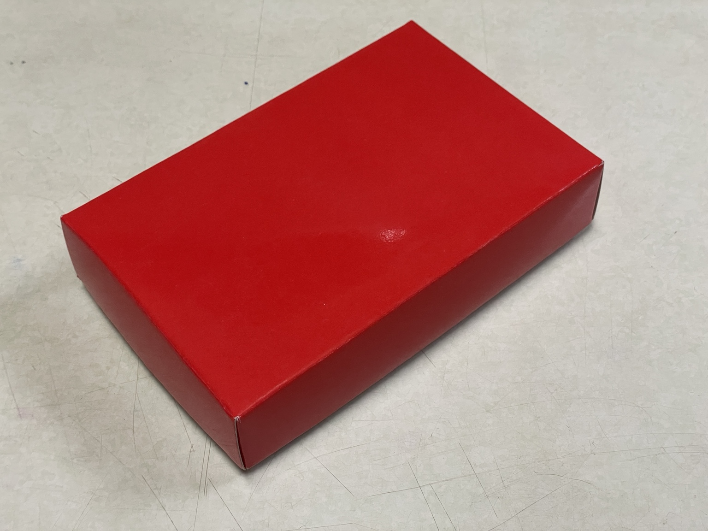

點選產品按鈕可直接查看完整介紹。

濃縮膏狀型態，可直接食用，也可搭配熱飲與日常料理。

30cc 小瓶裝與 180cc 袋裝並列，方便依日常需求選擇。

75g、300g、600g 三個規格，適合依燉湯需求選擇。

粉末型態，方便搭配溫熱飲品與日常飲食。


所屬產品線：仙加味・龜鹿
規格：100 g
承襲傳統熬製工序，以龜板與鹿角為基礎，經長時間慢火熬製濃縮製成。可直接食用，也可加入溫熱開水攪拌飲用，亦可搭配日常料理。

所屬產品線：仙加味・龜鹿
規格：30 cc 小瓶裝／180 cc 袋裝
龜鹿飲提供兩種型態：30cc 小瓶裝適合小容量即飲與攜帶；180cc 袋裝適合日常飲用。開封即可飲用，亦可隔水加熱後飲用。


所屬產品線：仙加味・龜鹿
規格：75 g／300 g／600 g
龜鹿湯塊以燉湯料理情境為主，方便依照不同份量與需求選擇規格，適合雞湯、排骨湯與日常燉煮料理。
所屬產品線：仙加味・龜鹿
規格：75 g
鹿茸粉為粉末型態，方便搭配溫熱飲品或日常飲食使用，適合作為日常補養搭配方向之一。

所屬品牌：柒玄茶
產品型態：調飲粉
柒玄茶・龜鹿調飲粉可加入茶飲、咖啡或其他熱飲中調和使用，作為更貼近日常飲品情境的延伸型態。